9 HTML
9.1 Overview
This chapter covers HTML documents, the default format in Quarto. There are good reasons HTML is the default:
It renders fast: a quick edit-preview cycle means you can iterate on your document without friction.
It displays almost anywhere: all that a reader needs is a web browser, available on desktops, Chromebooks, tablets and mobile devices.
It’s one of the most accessible formats: HTML has a long history of support from assistive technologies and guidelines, like the WCAG, exist for authoring accessible HTML.
Here we focus on format: html for single standalone documents. However, HTML documents are also the building blocks of websites, where each HTML document becomes a webpage. Read this chapter to learn about what goes on a web page, and head to Chapter 14 to learn how to combine them into a website.
For standalone documents where you want content to appear exactly the same for every viewer, or you need to conform to a “paged” layout, PDF may be a better option. PDF viewers are also widely available, but have a shorter history of supporting assistive technology. You can learn more about creating PDFs in Chapter 10.
General outline of chapter.
9.2 Your first HTML document
Since HTML is the default format in Quarto, you’ve already worked with a few HTML documents. But, to be concrete, here’s a short but complete example, with some common content types:
train-punctuality.qmd
---
title: "Route Punctuality Report"
author: "Dr. Sarah Okonkwo"
format: html
---
## On-time performance
@tbl-punctuality shows the on-time rate for six routes during Q4, broken down by peak and off-peak services.
| Route | Peak (%) | Off-peak (%) |
|:------------------|:--------:|:------------:|
| Central–North | 82 | 91 |
| Central–East | 78 | 88 |
| Harbour–Airport | 71 | 85 |
| West Loop | 88 | 94 |
| Coastal Express | 65 | 79 |
| University Line | 90 | 96 |
: On-time rates by route and service period {#tbl-punctuality}
Off-peak services consistently outperform peak services across all routes, with the Coastal Express showing the largest gap.
## Recommendations
Based on the results in @tbl-punctuality:
- Investigate causes of delays on the Coastal Express and Harbour–Airport routes
- Review peak-hour scheduling on Central–East to close the gap with off-peak performance
- Use the University Line and West Loop as benchmarks for network-wide improvementSince html is the default format, you could omit format: html, and still get HTML output.
When rendered the result is train-punctuality.html, shown in Figure 9.1.
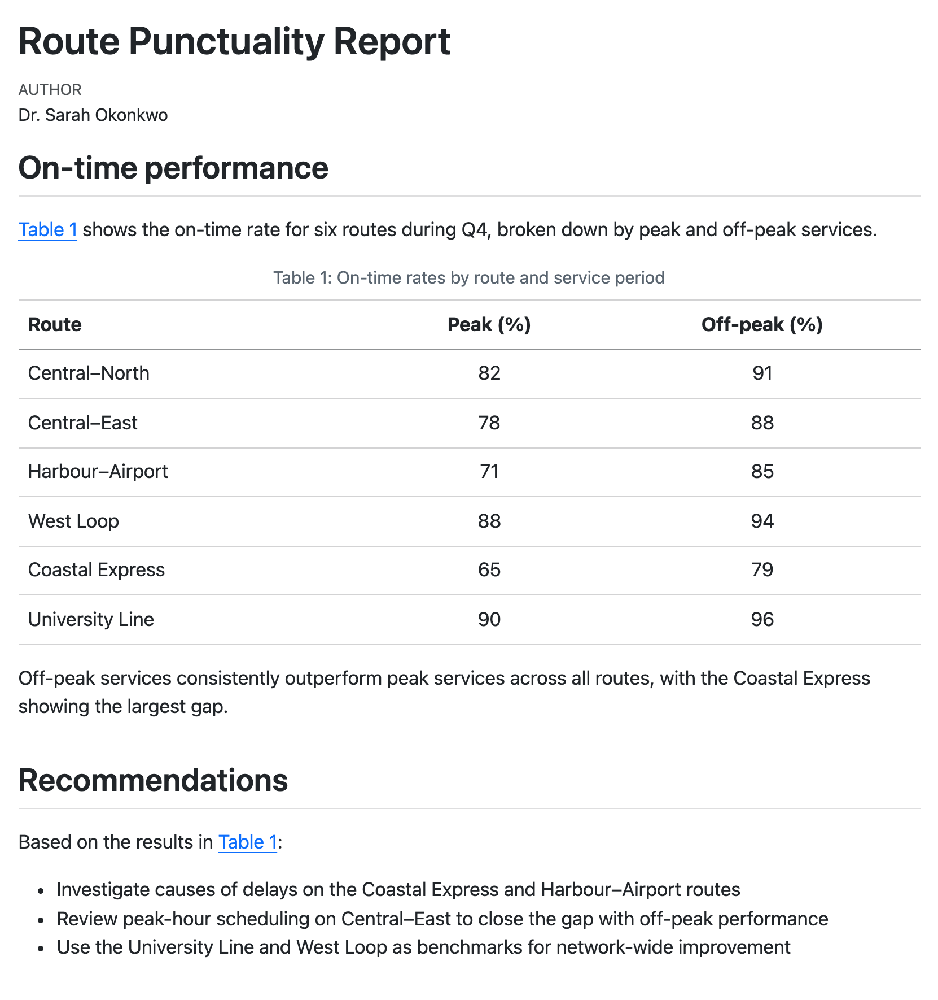
train-punctuality.qmd
9.3 Preview vs. render
When you call quarto preview on an document targeting format: html, there are two steps Quarto takes. First, it renders the document, then it serves it with a local webserver. The preview you see comes from pointing your browser at this webserver: you’ll see the URL starting with something like http://localhost.
This is subtly different from rendering your document and opening the resulting .html file in your browser. If you do that, you’ll see the URL starts with file://.
When browsers open a file from a file:// address they often restrict restrict what it can do. For example, Chrome refuses to load JavaScript modules from a file:// address. Since some Quarto features are implemented as JavaScript modules, when you view view a file:// page in these browsers you may lose functionality.
Some features you might lose include:
- a highlight of the current section in the table of contents,
- the table of contents hiding when it overlaps with margin content, and
- tabsets in the same
groupswitching together.
In general, you’ll always want to examine your rendered document from the preview, not open the resulting .html.
9.4 HTML is responsive and interactive
It’s worth pausing to highlight some of the properties unique to HTML output. (These also apply to other formats that produce .html like RevealJS).
We call HTML output responsive because it responds to the properties of the browser window in which it is viewed:
Your main body content resizes. On small screens, the full width of the screen is used for your content. On a larger screen, your content only takes up the middle column, and other things, like a table of contents, lie in the margin.
Images, by default, resize to fit the width of the content.
Panel layouts (Section 12.15.1) that lay out components out in a row, collapse into columns on small screens.
You can see this in Figure 9.2, which shows the document from Section 9.2, with a table of contents added, at two screen widths. On a wide screen the table of contents sits in the right margin, but on a narrow screen it’s hidden and the body text uses the full width.
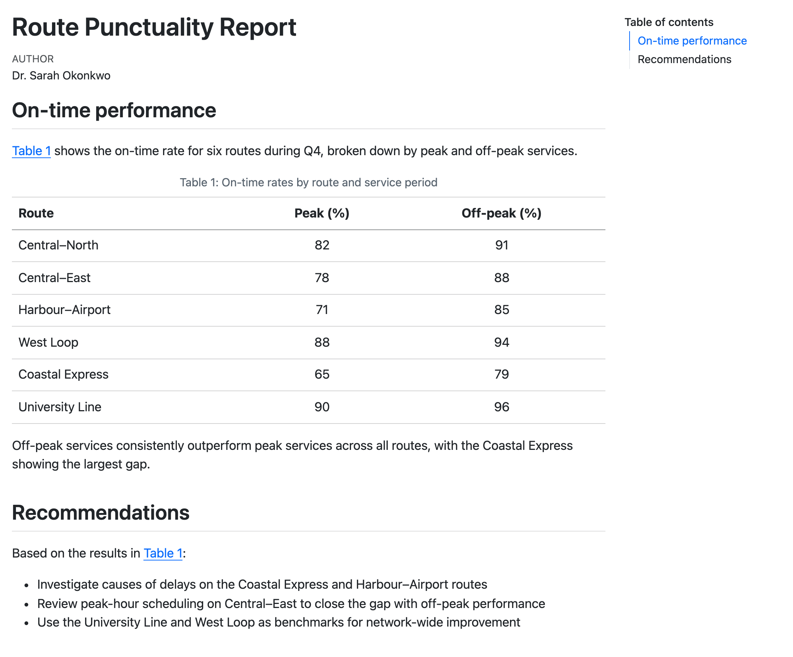
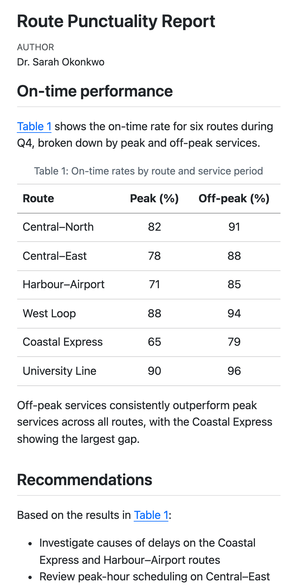
We call HTML interactive because readers actions can change the visible content:
Readers can hover over cross-references, footnotes and citations to see the linked content (Figure 9.4).
Readers can expand collapsed callouts or code blocks to reveal content.
Readers can switch between tabs in a tabset (Section 9.7).
These HTML features do benefit many readers but you should keep in mind their limitations:
Responsive and interactive features don’t transfer to static formats like
docx,pdfandtypst.Responsive and interactive features may pose accessibility challenges.
Come back and finish with what we choose to include/omit in this chapter: e.g. “we choose to omit interactive features that won’t serve you in other formats”. Or, “we’ll point you to the docs for many interactive features”
9.6 Code blocks
When you include a code block, it will get automatic syntax highlighting based on the language you specify. For example, here’s a code block specified as r:
report.qmd
Compute on-time rates from counts for each route:
```r
on_time <- c(142, 98, 201, 87, 165)
total <- c(154, 110, 215, 95, 178)
rate <- round(on_time / total * 100, 1)
cat("On-time rates (%):", rate)
```In the HTML, the block gets R syntax highlighting as shown in Figure 9.6. Executable code cells that are echoed in your document get the same treatment, so your code is styled consistently.
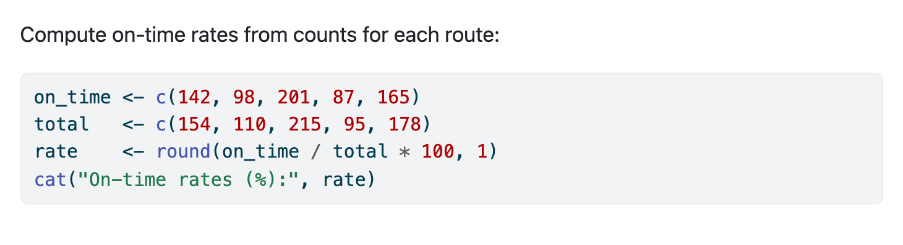
arrow syntax highlighting of an R code block in an HTML document
The default highlighting theme is arrow. Pick a different one with syntax-highlighting:
report.qmd
---
format:
html:
syntax-highlighting: github
---Supported themes include: a11y*, arrow*, pygments, tango, espresso, zenburn, kate, monochrome, breezedark, haddock, atom-one*, ayu*, breeze*, dracula, github*, gruvbox*, monokai, nord, oblivion, printing, radical, solarized, and vim-dark.
The themes with asterisks have light and dark variants designed for use on light and dark backgrounds respectively. Specify only the theme name and Quarto will switch between them automatically. To specify a variant explicitly add a -light or -dark suffix.
9.6.1 Filename
Adding a filename to a code block can provide additional context about where code goes for a reader.
Add one with the filename attribute:
report.qmd
Compute on-time rates from counts for each route:
```{.r filename="analysis.R"}
on_time <- c(142, 98, 201, 87, 165)
total <- c(154, 110, 215, 95, 178)
rate <- round(on_time / total * 100, 1)
cat("On-time rates (%):", rate)
```The filename renders as a label on the code block, as shown in Figure 9.7.
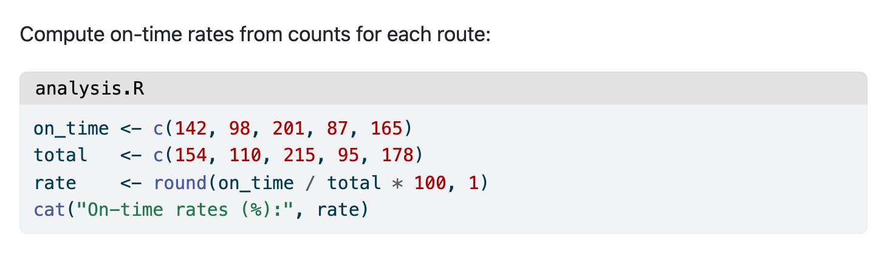
analysis.R
You can put any string in filename so it doesn’t necessarily have to be a filename. We often use "R Console", or "Terminal" in teaching settings to make it clear where learners should be writing and executing code.
9.6.2 Other code features
There are other code block features that are unique to HTML (and other HTML based formats like revealjs). It’s useful to know these exist but we point you to the documentation for the details and relevant options:
Copy button: Every code block gets a button to copy its contents to the clipboard. The button appears when a reader hovers over the block (Figure 9.8). You don’t need to do anything to get it, but you can turn it off or keep it always visible with
code-copy. Read more in the Copy Button section of the Quarto documentation.Code folding: Set
code-fold: trueto hide the code of executable cells behind a “Code” toggle, so readers see the output first and expand the code only if they want it (Figure 9.9). Read more in the Folding Code section of the Quarto documentation.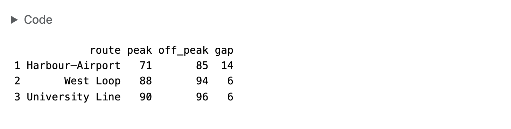
Figure 9.9: A folded code cell, with its output still visible Code tools: Set
code-tools: trueto add a “Code” menu next to the document title. The menu lets readers show or hide all the code at once, and view the source of the whole document (Figure 9.10). Read more in the Code Tools section of the Quarto documentation.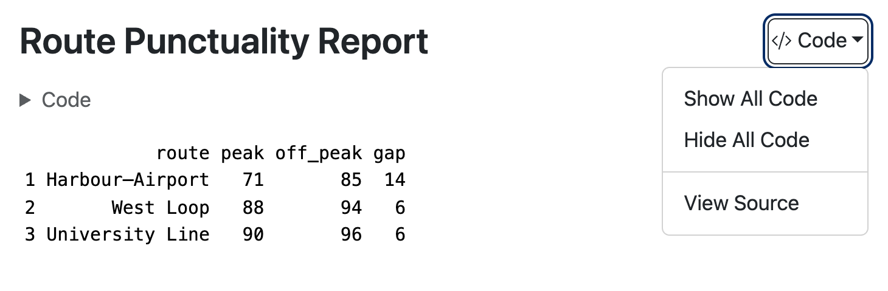
Figure 9.10: The code tools menu, opened from the button next to the title Code annotation: Add numbered markers to lines of code and explain each line in a numbered list below the block (Figure 9.11). Code annotation also works in other formats, but in HTML you can also show the explanations as a tooltip when a reader hovers over a marker. Read more on the Code Annotation page of the Quarto documentation.
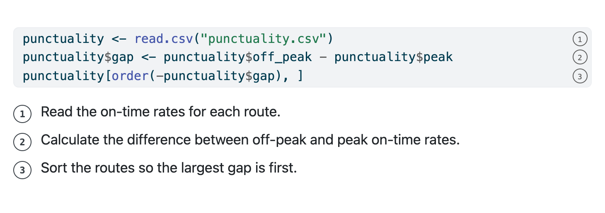
Figure 9.11: A code block with three annotated lines
9.7 Tabsets
A tabset shows several panels of content in the same space, one at a time. Readers click a tab to switch between panels. Tabsets work best for alternatives where a reader only needs to see one: the same code in R and Python, instructions for different operating systems, or details for different routes.
To create a tabset, put your content in a fenced div with the class .panel-tabset:
report.qmd
## Route details
::: {.panel-tabset}
### Harbour–Airport
On time for 71% of peak services and 85% of off-peak services.
Most delays happen at the airport terminal loop.
### West Loop
On time for 88% of peak services and 94% of off-peak services.
### University Line
On time for 90% of peak services and 96% of off-peak services.
The best performing route in the network.
:::Headings inside the div start new tabs, and the heading text becomes the tab label.
The result is shown in Figure 9.12.
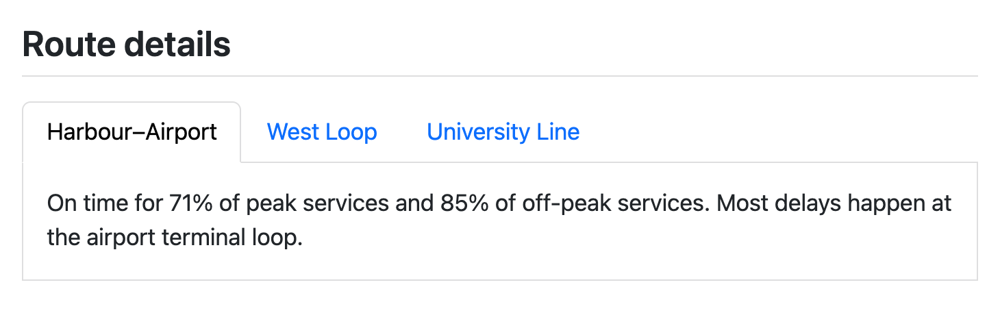
Tabsets are inherently an HTML feature. In static formats like PDF and MS Word, all tabs will be rendered one after another, with no interactive switching.
9.7.1 Linking tabsets with group
When your document has more than one tabset with the same tabs, give each of them the same group attribute:
report.qmd
::: {.panel-tabset group="route"}
### Harbour–Airport
...
### West Loop
...
### University Line
...
:::Now, when a reader selects “West Loop” in one tabset, every tabset in the route group switches to “West Loop” too. The reader’s browser also remembers the choice, so the same tab is selected when they come back to the page, or move to another page in the same website.
9.8 Mathematical equations
You write equations for HTML the same way as for any other format: with TeX math syntax. Use single dollar signs ($...$) for inline math, and double dollar signs ($$...$$) for display equations:
report.qmd
The network on-time rate, $p$, pools trips across all $n$ routes, where route $i$ ran $t_i$ trips and $k_i$ of them were on time:
$$
p = \frac{\sum_{i=1}^{n} k_i}{\sum_{i=1}^{n} t_i}
$$ {#eq-network-rate}
Because @eq-network-rate weights each route by its number of trips, the busiest routes have the most influence on the network rate.The result is shown in Figure 9.13.
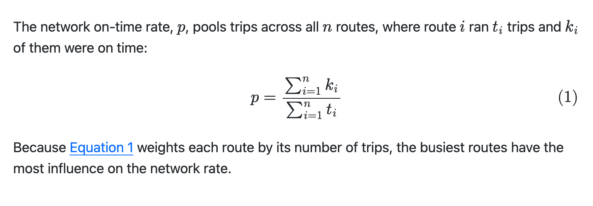
Like other cross-references in HTML, readers can hover over the link to @eq-network-rate to see a preview of the equation.
You can read more about writing equations, including cross-references and defining your own commands, in Section 12.9.
9.8.1 Math rendering methods
By default, Quarto uses MathJax, a JavaScript library that typesets the math in the reader’s browser. MathJax supports almost all common TeX math commands, and it makes equations available to screen readers.
MathJax loads from the web, so readers who are offline won’t see typeset math. If that matters, set html-math-method: mathml. MathML is a markup language for math that browsers display without JavaScript, but it supports fewer TeX commands:
report.qmd
---
format:
html:
html-math-method: mathml
---For other methods, see LaTeX Equations in the Quarto documentation.
9.9 Citations
Citations require a bibliography file holding reference metadata. A common format for this is BibTeX (.bib):
references.bib
@report{railregulator2023,
author = {{Office of Rail and Road}},
title = {Passenger Rail Performance: Annual Statistics},
year = {2023},
institution = {{Office of Rail and Road}}
}To cite an item in the bibliography, specify the bibliography file in bibliography and use the @ syntax in your text:
train-punctuality.qmd
---
bibliography: references.bib
---
The industry standard for on-time performance is 90% [@railregulator2023].The citation renders in the text, and Quarto adds a References section at the end of the document, as shown in Figure 9.14.
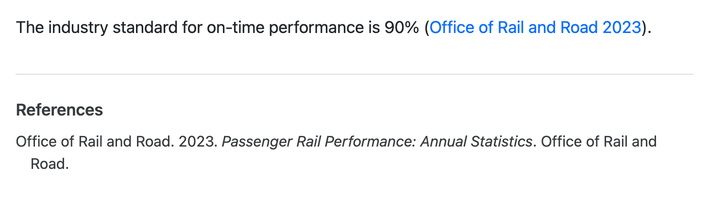
Citations styles are specified by Citation Language Style (CSL) files. The Zotero style repository provides a user friendly way to browse and download available styles maintained in the citation-style-language/styles Github repository.
The default comes from Pandoc and is chicago-author-date which corresponds to the Chicago Manual of Style, 18th edition, author-date style.
To use a different style, for example IEEE, provide a URL to the csl option:
train-punctuality.qmd
---
format: html
bibliography: references.bib
csl: https://www.zotero.org/styles/ieee
---Alternatively, download the .csl file and provide a path to the downloaded file.
The IEEE result is shown in Figure 9.15.
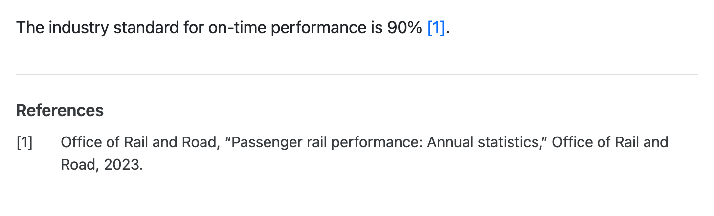
You can read more about citations in Section 12.11, including about various @ syntax variations.
By default, when readers hover over a citation in the text, they’ll get a preview of the full citation. You can turn off this behavior with the document option citations-hover:
---
citations-hover: false
---9.10 Computational outputs
Computational code cells work in format: html just as they do in other formats. Outputs like figures, tables, and inline values are inserted into the document where the code cell was.
For example, here’s a cell that produces a figure:
report.qmd
```{r}
#| label: fig-punctuality
#| fig-cap: On-time rate by route
#| fig-alt: A bar chart of on-time rates by route, showing values between roughly 85% and 95% across the Northern, Central, Circle, District, and Jubilee routes.
#| echo: false
library(ggplot2)
ggplot(trains, aes(x = route, y = rate)) +
geom_col(fill = "#4e79a7") +
labs(x = NULL, y = "On-time rate (%)") +
theme_minimal()
```report.qmd
```{python}
#| label: fig-punctuality
#| fig-cap: On-time rate by route
#| fig-alt: A bar chart of on-time rates by route, showing values between roughly 85% and 95% across the Northern, Central, Circle, District, and Jubilee routes.
#| echo: false
from plotnine import ggplot, aes, geom_col, labs, theme_minimal, element_blank, theme
(
ggplot(trains, aes(x="route", y="rate"))
+ geom_col(fill="#4e79a7")
+ labs(x=None, y="On-time rate (%)")
+ theme_minimal()
+ theme(axis_title_x=element_blank())
)
```The figure appears directly below the surrounding prose with a numbered caption, as shown in Figure 9.16.
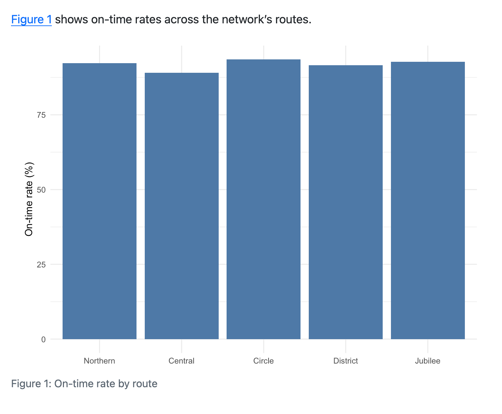
You’ll find the code cell options for captions, alternative text and cross-references, along with many more details about figures and tables from code, in ?sec-figtab.
Figures and tables, whether they come from code or not, also pick up some of your document’s appearance settings. You’ll learn how Quarto styles tables in Section 9.16.6.
[CVW] Link to light and dark versions of figures (@sec-figtab-light-dark) once it lands in the Figures and tables chapter. See #36 and branch figtab-light-dark.
The sections below cover a few things that are specific to HTML: figure formats, table formats, and interactive widgets.
9.10.1 Figure formats
The default figure format for HTML is retina. This encodes both a default format, PNG, and that the image should be generated with twice as many pixels as its display size so it appears sharp on high-resolution screens.
Another reasonable format for HTML is SVG. SVG is a vector format, so it scales without pixelation, however far a reader zooms in. However, it can be slow to display when a figure contains many elements, like a scatterplot with thousands of points. Set fig-format in the document header to switch the default format:
report.qmd
---
format:
html:
fig-format: svg
---You’ll learn how to change the size of figures, along with other figure options, in ?sec-figtab-computational.
9.10.2 Table formats
Any code that produces a markdown or HTML table will result in a table in your HTML document.
Markdown tables are a good choice for simple tables. Markdown tables from code behave just like raw markdown tables you might write by hand with one exception: Quarto adds extra classes to the resulting <table> element. This means markdown tables produced computationally look visually different from those produced by markdown directly. You can learn more about these classes in Section 9.16.6.
HTML tables are a better fit when you need more complicated table structure, like merged cells, hierarchical headers, or styling that depends on cell contents. HTML is also a common output for dedicated table packages. Quarto keeps the structure of an HTML table: its rows, cells, merged cells, and any classes or inline styles on individual cells. However, Quarto may change the <table> element itself, adding its own classes and removing any inline styles. If your rendered table looks drastically different from the one you expected, Quarto’s table processing is often the culprit.
Some Quarto-aware table packages will provide an option to turn this processing off. If the package you are using doesn’t, and you’d like to, add the html-table-processing code option:
document.qmd
```{r}
#| html-table-processing: none
# Code that produces an HTML table.
```For general details about layout, labelling, etc., see ?sec-figtab. For more details on computational tables, see ?sec-figtab-tables.
9.10.3 Widgets
Many R and Python packages produce interactive outputs, like maps you can pan and zoom, plots that show values on hover, and tables you can sort and search. These are often called widgets.
In HTML output, widgets usually just work: put the code that creates the widget in a code cell, and the rendered document includes the widget along with the JavaScript it needs.
For example, here’s a map made with the leaflet package in R and the ipyleaflet package in Python:
report.qmd
```{r}
library(leaflet)
leaflet() |>
addTiles() |>
setView(lng = 174.768, lat = -36.852, zoom = 12)
```report.qmd
```{python}
from ipyleaflet import Map
Map(center=(-36.852, 174.768), zoom=12)
```You don’t need to find widget packages with special Quarto support. Quarto relies on the same mechanisms that display widgets in other places:
In R, packages built on htmlwidgets, like leaflet, plotly, DT and reactable, work. So do most other packages that use htmltools to produce HTML.
In Python, packages that display in Jupyter notebooks, like plotly, Altair, Bokeh and folium, work. So do Jupyter Widgets, like ipyleaflet.
There are some limitations to keep in mind:
Widgets run without R or Python. Your code runs only when you render. In the rendered document, the widget’s interactions happen in the browser, so anything that needs to run R or Python again won’t work.
Readers may need an internet connection. Many widgets get content from the web when they display. If your readers might be offline, test your document without a connection.
Widgets need their supporting files. For R widgets, Quarto puts the JavaScript and CSS in the
_filesfolder next to your.htmlfile. If you share only the.htmlfile, the widgets don’t display. Useembed-resources: true(Section 9.17.2) or share the whole folder.Widgets are HTML only. When you render to a static format like PDF you get a static version of the widget or nothing. With the knitr engine, rendering fails unless the webshot2 package is installed. If it is installed, Quarto includes a screenshot of the widget. With the jupyter engine, you get a static image only if the package also provides one in its output bundle. If you render to more than one format, consider using conditional content to show a static plot or table in the other formats (see Conditional Content in the Quarto documentation).
Widgets add weight and may not be accessible. Each widget library adds JavaScript that readers must download. Not all widgets work with a keyboard or a screen reader, so give important results in the text too.
[CVW] Screenshot for Figure 9.17. Verify embed-resources: true captures everything for Jupyter widgets (the widget manager loads modules from a CDN at runtime). Consider moving to a “Computational outputs” chapter in the reorg.
9.11 Full width and margin content
On wide screens, your content appears in the middle of the page, in what Quarto calls the body column. You can move content out of the body column with column classes. For example, use might use .column-margin for a short aside:
report.qmd
Peak-hour delays on the Harbour–Airport route were the largest single contributor to the Q4 miss.
::: {.column-margin}
The regulator's on-time threshold is 90%.
:::Or give a wide table more room by applying .column-page:
report.qmd
On-time rates during Q4, broken out by service period and day type:
::: {.column-page}
| Route | Peak Weekday (%) | Off-peak Weekday (%) | Peak Weekend (%) | Off-peak Weekend (%) | Total services |
|:------------------|:----------------:|:--------------------:|:----------------:|:--------------------:|:--------------:|
| Central–North | 82 | 91 | 86 | 94 | 12,480 |
| Central–East | 78 | 88 | 84 | 92 | 11,220 |
| Harbour–Airport | 71 | 85 | 79 | 89 | 9,840 |
:::
West Loop and University Line consistently cleared 88% across all service periods.You can see the result of both in Figure 9.18.
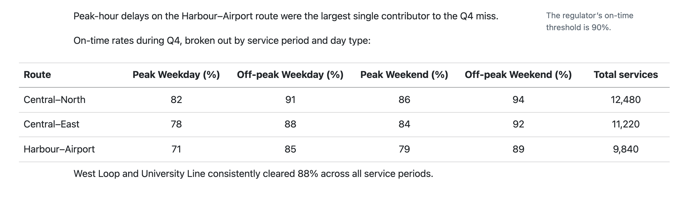
The full set of columns classes documented in Article layout is available in HTML.
There are code cell and document options to place figures and tables in certain columns. See ?sec-page-columns for more details.
9.11.1 Columns and responsive layout
You saw in Section 9.4 that HTML output is responsive to the size of a readers screen. As a screen becomes narrower the column classes collapse. Below 992px any classes that use it, lose their extra width on the left (Figure 9.19).
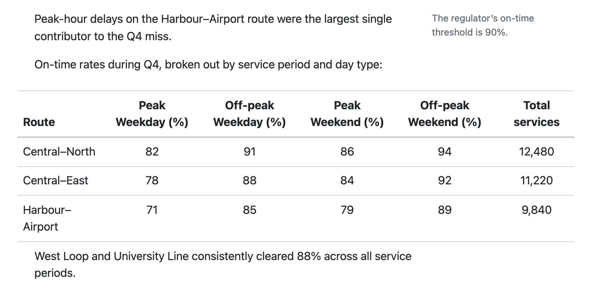
Below 768px everything except .column-screen is body width, and margin content moves inline (Figure 9.20).
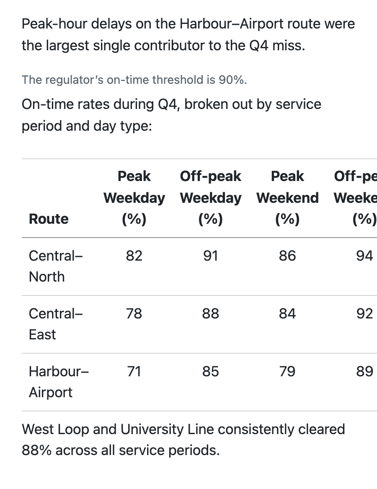
When margin content or wide content overlaps with the table of contents, the table of contents collapses to a button (Figure 9.21).
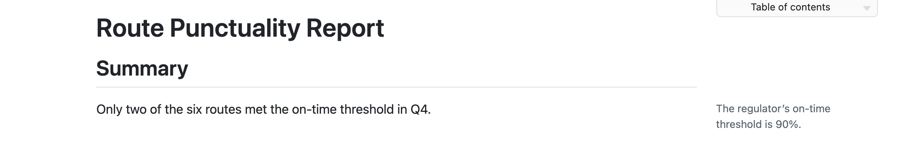
If you are using column classes, it’s a good idea to check your layout at a narrow device width and verify your content makes sense when the columns collapse.
You can also put footnotes, citations, and figure captions in the margin (Section 12.15.2). To change the width of the body and margin columns, use the grid option (?sec-html-grid).
9.12 Raw HTML
If you want to include HTML syntax that propagates as-is to the final HTML file use a raw HTML block. For example, HTML has a <meter> element for displaying a value in a known range. There is no equivalent Quarto markdown syntax that creates this element. To use one in your Quarto document, use the HTML syntax inside a raw HTML block:
report.qmd
## Peak on-time rate
```{=html}
<label for="coastal-express">Coastal Express</label>
<meter id="coastal-express" value="0.65" low="0.75" high="0.85" optimum="1">65%</meter>
```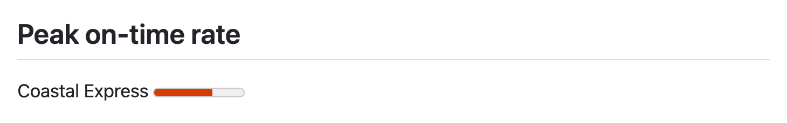
<meter> element
Another common use is to embed an iframe. Iframes are windows onto other web pages: an <iframe> element displays another page inside a rectangle on your page, and readers can interact with it as if they had visited that page. Two common uses are to embed an app, e.g. a Shiny app, hosted on another site, or embed HTML slides like those covered in Chapter 11. There is no native syntax, so it belongs in a raw HTML block. Here’s an example that uses an iframe to embed a map hosted on openstreetmap.org:
report.qmd
## Harbour–Airport route
```{=html}
<iframe title="Map of the area served by the Harbour–Airport route" width="100%" height="350" src="https://www.openstreetmap.org/export/embed.html?bbox=174.76%2C-41.33%2C174.82%2C-41.28&layer=mapnik"></iframe>
```It’s also common for other projects to provide HTML you can copy and paste to your own sites. For example, the Creative Commons (CC) chooser provides an HTML snippet to display and link a CC license. Copy the snippet and drop it in a raw HTML block:
report.qmd
## License
```{=html}
This work is licensed under <a href="https://creativecommons.org/licenses/by-sa/4.0/">CC BY-SA 4.0</a><img src="https://mirrors.creativecommons.org/presskit/icons/cc.svg" alt="" style="max-width: 1em;max-height:1em;margin-left: .2em;"><img src="https://mirrors.creativecommons.org/presskit/icons/by.svg" alt="" style="max-width: 1em;max-height:1em;margin-left: .2em;"><img src="https://mirrors.creativecommons.org/presskit/icons/sa.svg" alt="" style="max-width: 1em;max-height:1em;margin-left: .2em;">
```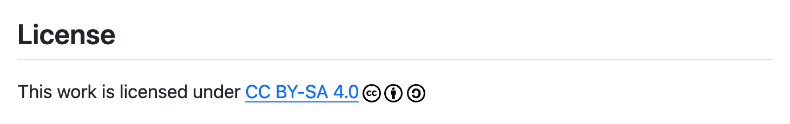
If you need to add HTML to the <head> element, or are adding HTML to the start or end of your document, you should use one of the include- options covered in Section 9.13.
9.13 Including HTML with include- options
The include- options take raw content and insert it, without processing, at a fixed place in your HTML output:
| Option | Where the content goes | Typical use |
|---|---|---|
include-in-header |
The end of <head> |
<meta> tags, <script> tags that load a JavaScript library from a CDN, or third-party snippets like analytics |
include-before-body |
The start of the main content, before the title block | A banner, like a “Draft” notice |
include-after-body |
The end of <body>, after the main content |
A footer, or scripts that need the page loaded |
As an example, consider requesting your page not be indexed by search engines. The usual approach is to add a specific meta tag to the header:
report.qmd
---
title: "Route Punctuality Report"
format:
html:
include-in-header:
text: |
<meta name="robots" content="noindex">
---Notice the snippet itself is passed in the header to the text subkey. This works well for short snippets, but you can instead provide a path to a file that holds your snippet. For example, if you’ve stored the CC snippet from Section 9.12 in license.html:
license.html
<footer class="text-center py-4">
This work is licensed under <a href="https://creativecommons.org/licenses/by-sa/4.0/">CC BY-SA 4.0</a><img src="https://mirrors.creativecommons.org/presskit/icons/cc.svg" alt="" style="max-width: 1em;max-height:1em;margin-left: .2em;"><img src="https://mirrors.creativecommons.org/presskit/icons/by.svg" alt="" style="max-width: 1em;max-height:1em;margin-left: .2em;"><img src="https://mirrors.creativecommons.org/presskit/icons/sa.svg" alt="" style="max-width: 1em;max-height:1em;margin-left: .2em;">
</footer>You can include it at the end of your content with:
report.qmd
---
title: "Route Punctuality Report"
format:
html:
include-after-body:
file: license.html
---9.14 Other HTML features
We’ve covered the most important HTML features but there are a few more that are useful to know about. We point you at the Quarto documentation for the details.
9.14.1 Section anchors
By default, each heading in your document gets an anchor link: a icon after the heading text that is visible when a reader hovers over the heading. Anchor links give readers a quick way to share a direct link to a section. A reader clicks the icon, then copies the URL from their browser’s address bar. Figures and tables with a cross-reference identifier also get an anchor link.
Recall from Section 9.5.2 that Quarto creates identifiers automatically, but you can also set your own:
report.qmd
## Data methods {#data}Start the identifier with sec- if you also want to cross-reference the section.
To turn off anchor links, set anchor-sections: false. Read more in the Anchor Sections section of the Quarto documentation.
9.14.2 Reference popups
You saw in Figure 9.4 that readers can hover over a cross-reference to see a preview. Footnotes and citations get the same treatment by default.
To turn off the popups, set footnotes-hover: false, citations-hover: false, or crossrefs-hover: false. Read more in the Reference Popups section of the Quarto documentation.
9.14.3 External links
By default, links to other sites look the same as links within your document, and they open in the same browser tab. To mark external links with a icon, set link-external-icon: true. Read more in the External Links section of the Quarto documentation.
9.14.4 Smooth scrolling
By default, when a reader clicks a link to another place in the page, like an entry in the table of contents, the browser jumps straight there. Set smooth-scroll: true to make the browser scroll to the new place instead. Scrolling helps readers keep track of where they are in the document. Read more in the Smooth Scrolling section of the Quarto documentation.
9.14.5 Lightbox figures
Set lightbox: true to let readers click an image to see a larger view of it. The larger view fills the browser window and includes the figure caption.
A lightbox is most useful for detailed figures, like maps or plots with many small labels, that are hard to read at body width. You can also turn on the lightbox for individual images, and group images into a gallery. Read more on the Lightbox Figures page of the Quarto documentation.
9.15 Making accessible HTML
[CVW] HTML is generally the most accessible format. Practical best practices: semantic headings, alt text, color contrast, descriptive link text, table headers. The axe: true checker (axe-core): enabling it, document/json/console output, using it inside a debug profile to avoid shipping reports. Link to the html-accessibility docs. When axe flags a contrast violation, point forward to Section 9.16 for the CSS/SCSS fix.
9.16 Customizing appearance
[CVW] Abbreviated, for a first single HTML document (document-level YAML, not _quarto.yml). The comprehensive treatment lives in Section 14.6; this section just gets readers started and links forward. Intro: three-tier escalation (built-in theme → brand → CSS/SCSS), scoped to one document. State up front that dark mode, combining brand with a built-in theme, and the role of Bootstrap are covered in Section 14.6. This section also covers styling the title (header) block.
9.16.1 Built-in themes
[CVW] Set theme: in the document’s format: html block; mention the default theme; Bootswatch as the gallery (link to bootswatch.com). Forward-ref Section 14.6 for applying site-wide and the light/dark toggle.
9.16.2 brand.yml
[CVW] _brand.yml for custom colors (background, foreground, primary, plus link) and fonts (base, headings, monospace via Google/Bunny). Include the code-color note (monospace-inline/monospace-block) since changing background affects code-block contrast — bridges to accessibility. Link to the brand.yml docs and Section 14.6 for dark brands and layering with a theme.
9.16.3 Light and dark content
[CVW] We should link here from quick ref table at the start of the Figures and Tables chapter, for “How do I get light and dark mode figures?”
When you give your document both a light and a dark theme, readers can switch between them with a toggle:
report.qmd
---
format:
html:
theme:
light: flatly
dark: darkly
---You’ll learn more about light and dark themes, including light and dark brands, in Section 14.6.
Although text and backgrounds change with the theme, images will not. An image with a light background might look great in your light theme, but stick out in your dark theme. To provide an integrated look, provide two versions of the image that Quarto switches depending on the theme.
Depending on how your content is generated you either add .light-content and .dark-content classes, or use the renderings code cell option.
9.16.3.1 Images and other content
Add the class .light-content to content that should appear only in light mode, and .dark-content to content that should appear only in dark mode. For example, for an image with a light and a dark version:
report.qmd
{.light-content fig-alt="..."}
{.dark-content fig-alt="..."}Both images are present in the HTML, but only one will be visible at a time. Give both versions the same alternative text.
The classes work on any element, not only images. For example, you could use a fenced div to show a note only in dark mode:
report.qmd
::: {.dark-content}
The diagrams on this page use the dark color scheme.
:::If your images needs to be cross-referencable you’ll need to use the fenced div syntax (?sec-syntax-variations):
report.qmd
::: {#fig-diagram}
{.light-content fig-alt="..."}
{.dark-content fig-alt="..."}
The architecture of the system.
:::9.16.3.2 Computational figures
For an image made by a code cell, use the renderings code cell option. For example, set renderings: [light, dark], and produce two plots in your code cell:
report.qmd
```{r}
#| label: rate-plot
#| renderings: [light, dark]
#| fig-alt: A bar chart of on-time rates for five routes, all between 85% and 95%.
library(ggplot2)
p <- ggplot(trains, aes(x = route, y = rate)) +
geom_col() +
labs(x = NULL, y = "On-time rate (%)")
p + theme_minimal()
p + theme_minimal(ink = "white", paper = "#222222")
```report.qmd
```{python}
#| label: rate-plot
#| renderings: [light, dark]
#| fig-alt: A bar chart of on-time rates for five routes, all between 85% and 95%.
from plotnine import *
p = (
ggplot(trains, aes(x="route", y="rate"))
+ geom_col()
+ labs(x="", y="On-time rate (%)")
+ theme_minimal()
)
dark = theme(
plot_background=element_rect(fill="#222222"),
text=element_text(color="white"),
panel_grid=element_line(color="#444444"),
)
p.show()
(p + dark).show()
```Quarto adds the .light-content class to the first output and the .dark-content class to the second. A single fig-alt string applies to both renderings, so the light and dark plots get the same alternative text.
To add a caption and cross-reference, use the fenced div syntax, as for images:
report.qmd
@fig-rate shows on-time rates across the network's routes.
::: {#fig-rate}
```{r}
#| echo: false
#| renderings: [light, dark]
#| fig-alt: A bar chart of on-time rates for five routes, all between 85% and 95%.
p + theme_minimal()
p + theme_minimal(ink = "white", paper = "#222222")
```
On-time rate by route
:::The plot switches along with the rest of the page (Figure 9.24).
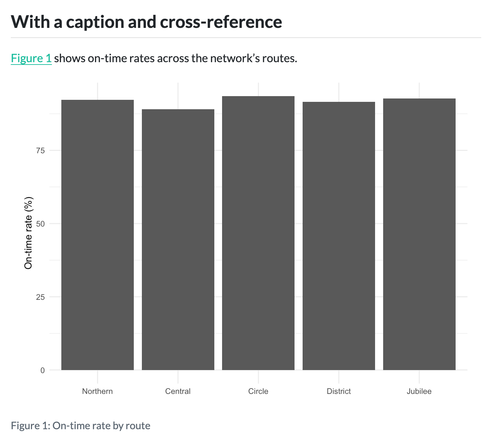
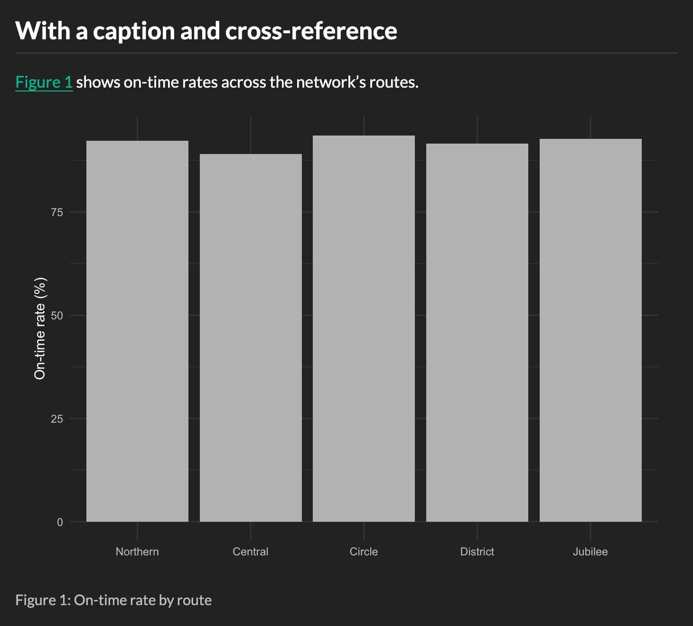
9.16.4 Custom CSS and SCSS
[CVW] Deliberately abbreviated, anchored on fixing a contrast problem flagged by axe. One sentence on CSS vs SCSS, the two injection points (css and theme), then a single worked example bumping a low-contrast link/text color to pass the check — cross-ref back to Section 9.15. Forward-link to Section 14.6 (Adding CSS or SCSS) and the html-themes Sass-variables docs for everything deeper, including Bootstrap.
9.16.5 Title block
[CVW] The header block at the top of an HTML doc. VERIFY the exact field list against the quarto-cli source (the HTML title-block template/partial), not the docs. Tentative default-block fields to confirm: title, subtitle, author (with affiliation, orcid/email/url), date, doi, abstract; banner style adds description and categories; broader scholarly fields (keywords, funding, copyright, license, citation) likely aren’t in the default top block. HTML-specific styling: title-block-banner (a color or image banner) and title-block-style. Connect back to Section 9.2, where the default block first appears. Link to the front-matter and title-block docs for readers.
9.16.6 Tables
Quarto styles tables in HTML with Bootstrap, the CSS framework behind Quarto’s HTML themes. Every markdown table gets Bootstrap’s base table styling, so it matches your theme’s fonts and colors.
You can add more Bootstrap styles to a pipe table (Section 12.7.1) with classes in the caption line:
report.qmd
| Route | On time | Total |
|----------|--------:|------:|
| Northern | 142 | 154 |
| Central | 98 | 110 |
| Circle | 201 | 215 |
: Punctuality by route {.striped .hover}The available classes are:
| Class | Effect |
|---|---|
.striped |
Shades every other row |
.hover |
Highlights the row under the mouse pointer |
.bordered |
Adds borders on all sides of every cell |
.borderless |
Removes all borders |
.sm |
Makes the table more compact, with less cell padding and smaller text |
.responsive |
Scrolls the table horizontally when it is wider than the page |
Use these classes only for appearance. Other formats ignore them, so a table with .striped in HTML is a plain table in Typst.
Tables from code cells get slightly different defaults. When a code cell outputs a markdown table, or a plain HTML table, Quarto adds the .sm and .striped styles. Packages that style their own tables, like gt and great_tables, opt out of the Bootstrap styling, so the package’s styles apply instead.
9.18 Wrapping up
[CVW] Pointers: Chapter 14 (multi-page sites), Chapter 12 (cross-format features), and relevant Quarto docs. Things we haven’t talked about: Commenting,